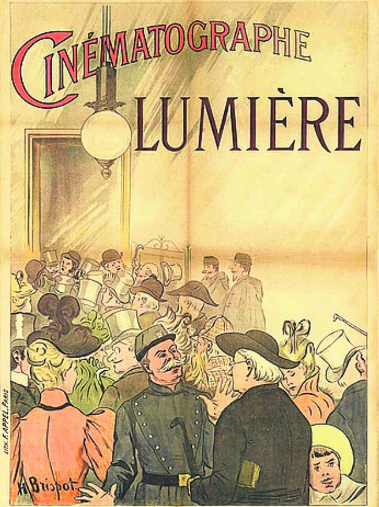

La Sortie de l'Usine Lumière à Lyon
Prima proiecție cinematografică publică a unui film, cu aparatul Fraților Lumière, are loc la 28 decembrie 1895, la Paris, în salonul Indian al restaurantului „Grand Cafe”, Boulevard des Capucines. Filmul proiectat e intitulat „La Sortie de l'Usine Lumière à Lyon” ("Ieșirea din Uzinele Lumière din Lyon"). Un alt film foarte important a fost „L'Arrivée d'un Train en Gare de La Ciotat” ("Sosirea unui Tren în Gara La Ciotat"), care a rulat, imediat după premiera franceză, și la București.
Astfel, data de 28 decembrie 1895 marchează nu numai prima proiecție cinematografică ci și nașterea unei noi arte, „arta cinematografică”, „cea de-a șaptea artă” cum mai este cunoscută, și a unei noi industrii, „industria cinematografică”.
Filmul a fost multă vreme socotit ca un amuzament de bâlci, tratat cu dispreț de oamenii serioși. Mulți din cei care au contribuit la temelia acestei noi forme de exprimare, și-au început activitate exploatând câte un „nickel odeon” (în traducere liberă „templu al artei de doi bani"), cinematograful de mai târziu.